黄晓西旅行衣橱 ／ 已确认拆件稿六套选定服装拆件稿
点选一套查看大图。每张左侧是整身穿搭，右侧上排为发型和上装，下排为下装和鞋履。各款下方可展开已选原图。
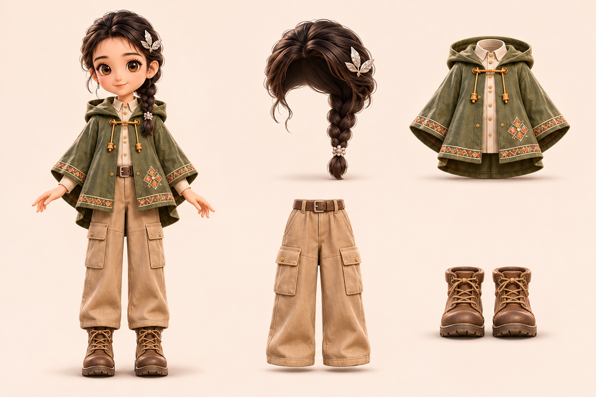
- 发型／头饰
- 银叶发夹与侧编发
- 上装
- 苔绿连帽斗篷、米白衬衫
- 下装
- 带腰带的沙色工装长裤
- 鞋履
- 棕色系带靴
衬衫与斗篷按一件上装处理，腰带随工装裤。
对照上一轮选中的 A1 原款
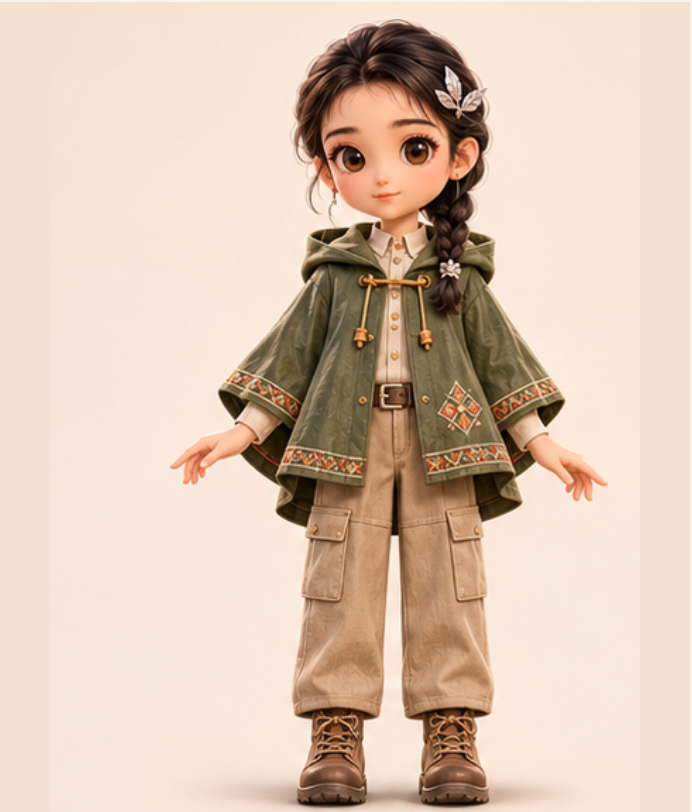
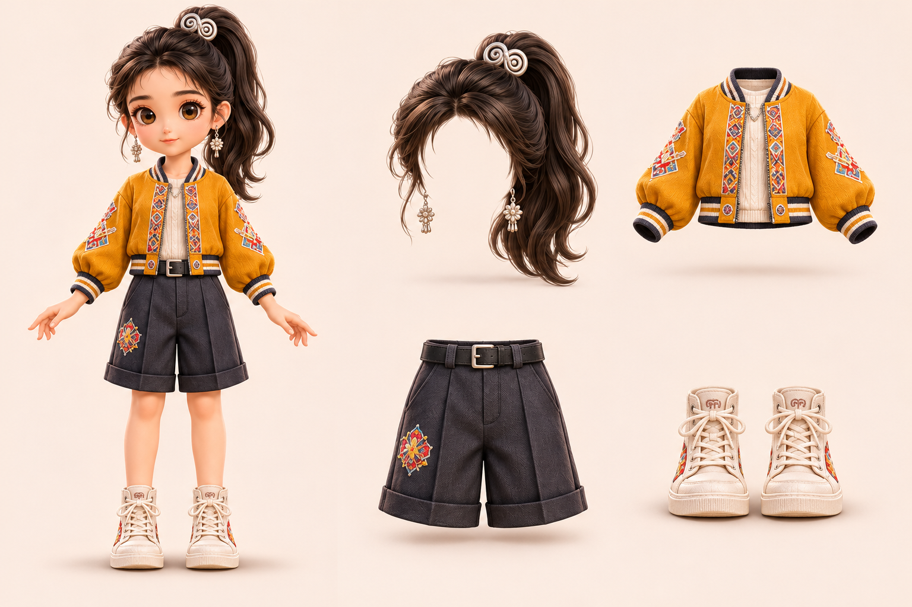
- 发型／头饰
- 双旋银扣高马尾
- 上装
- 绣边棒球夹克、浅色内搭
- 下装
- 深灰翻边及膝短裤
- 鞋履
- 象牙白高帮鞋
选定的是棒球夹克与短裤。裤腿中缝、翻边和单侧绣花都保留在下装。
对照上一轮选中的 A2 原款
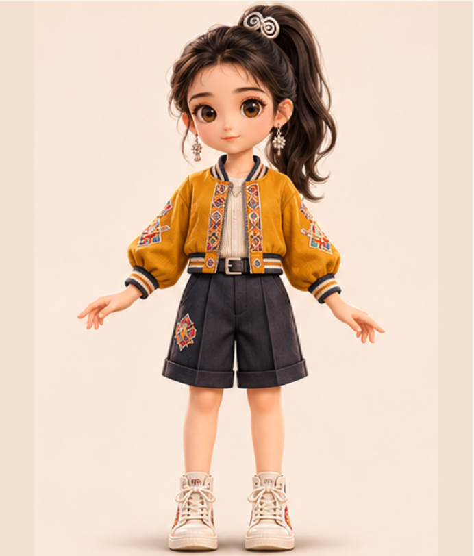
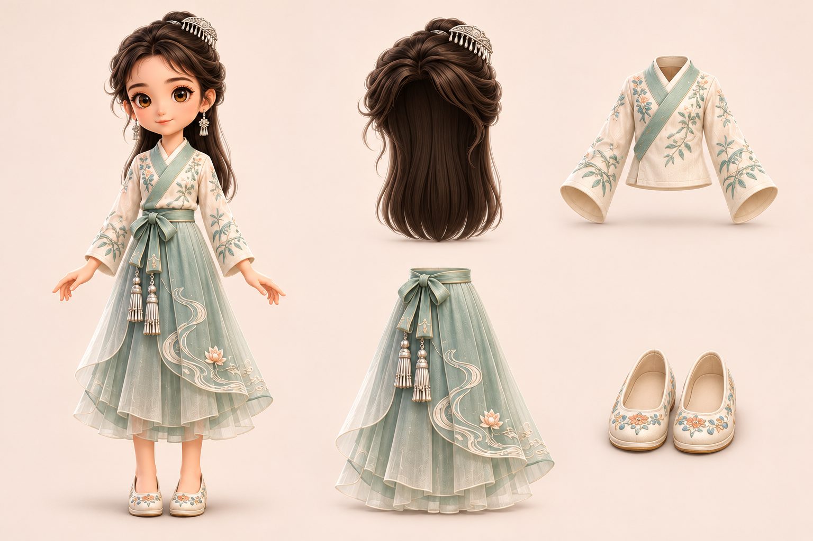
- 发型／头饰
- 银梳半盘长发
- 上装
- 象牙白交领绣花短衫
- 下装
- 玉色双层纱裙、腰结及银流苏
- 鞋履
- 浅色绣花鞋
腰结和双流苏随裙替换。后续制层时，披发置于肩袖之后。
对照上一轮选中的 C3 原款
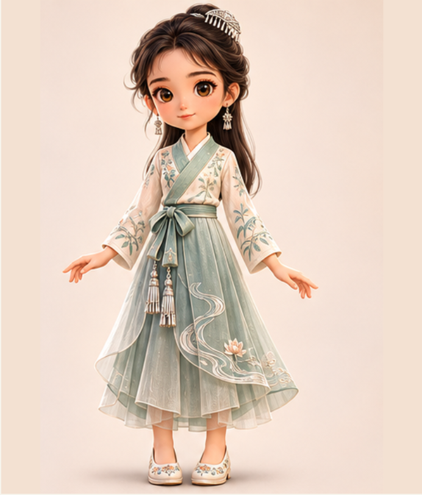
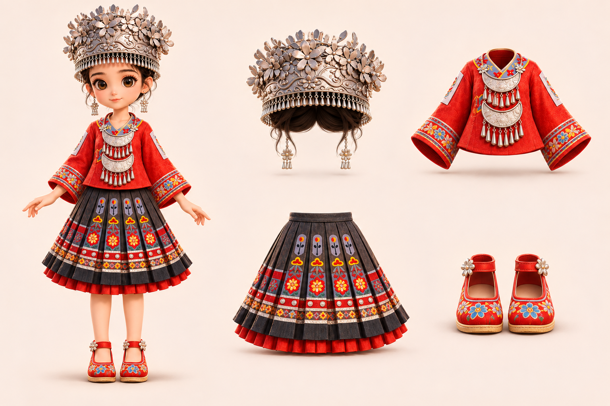
- 发型／头饰
- 花银冠与盘发
- 上装
- 红绣衣、银胸饰
- 下装
- 黑红百褶绣裙
- 鞋履
- 红色绣花搭带鞋
银冠跟发型，胸前两层银饰跟上装；两者可分开搭配。
对照上一轮选中的 A4 原款
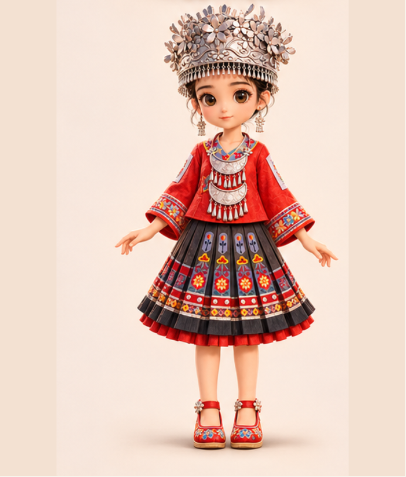
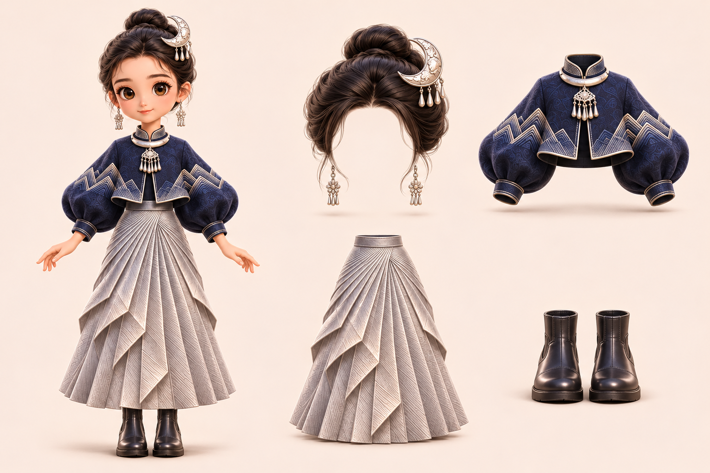
- 发型／头饰
- 弯月银梳与高髻
- 上装
- 深蓝山纹灯笼袖短夹克、银颈饰
- 下装
- 银灰折扇长裙
- 鞋履
- 黑色短靴
夹克在腰际收短，让裙褶从腰头展开。重点核对袖量和裙摆的折面。
对照上一轮选中的 B5 原款
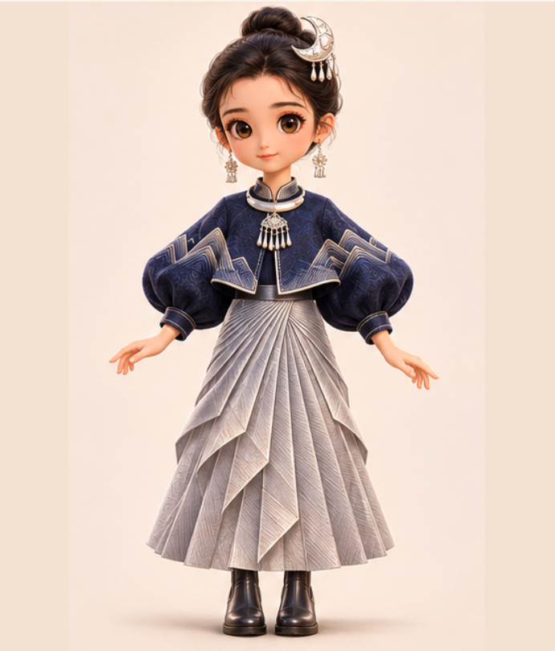
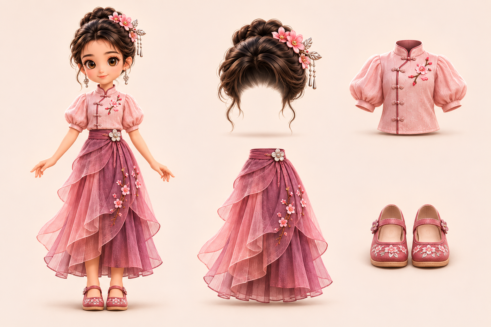
- 发型／头饰
- 花簪盘发
- 上装
- 粉色立领泡袖短衫
- 下装
- 莓紫叠瓣纱裙与花形腰扣
- 鞋履
- 粉色绣花搭带鞋
花形腰扣随裙，衣襟盘扣随上装。透纱和深色里裙合成一件下装。
对照上一轮选中的 A6 原款
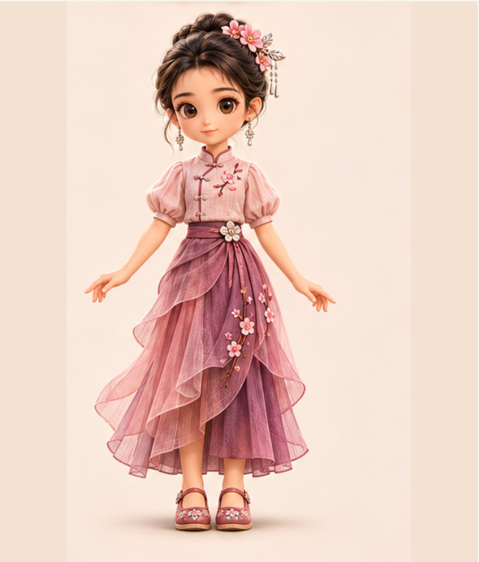